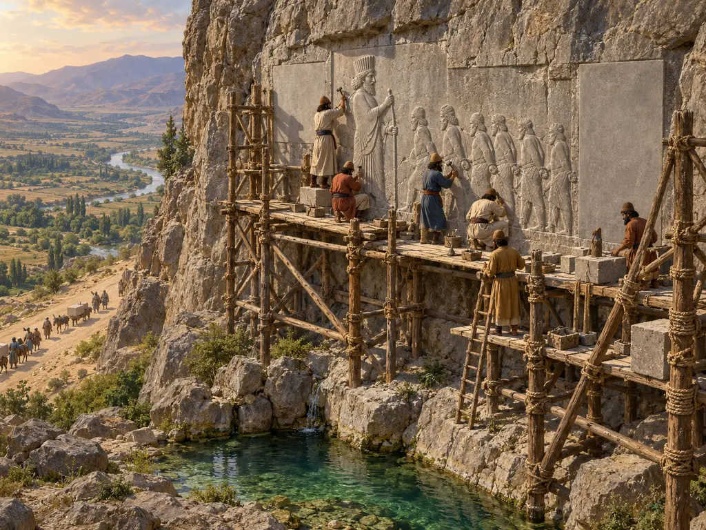
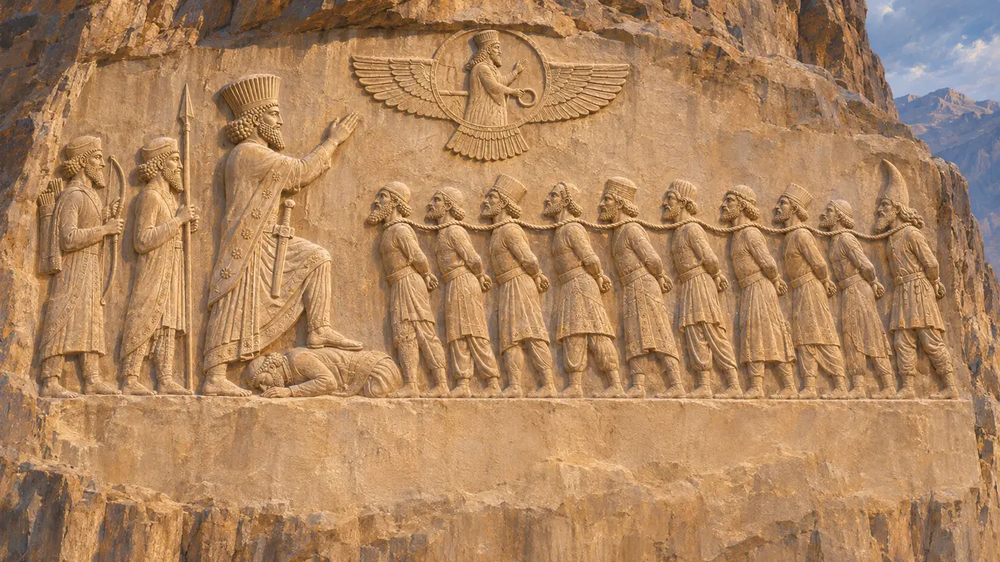
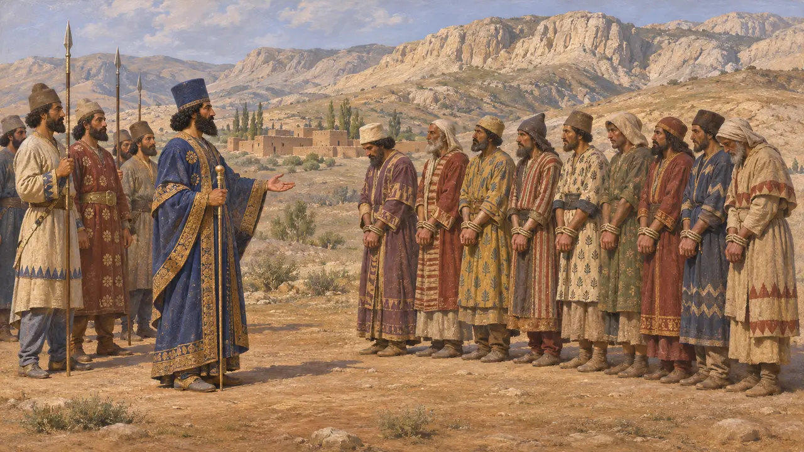
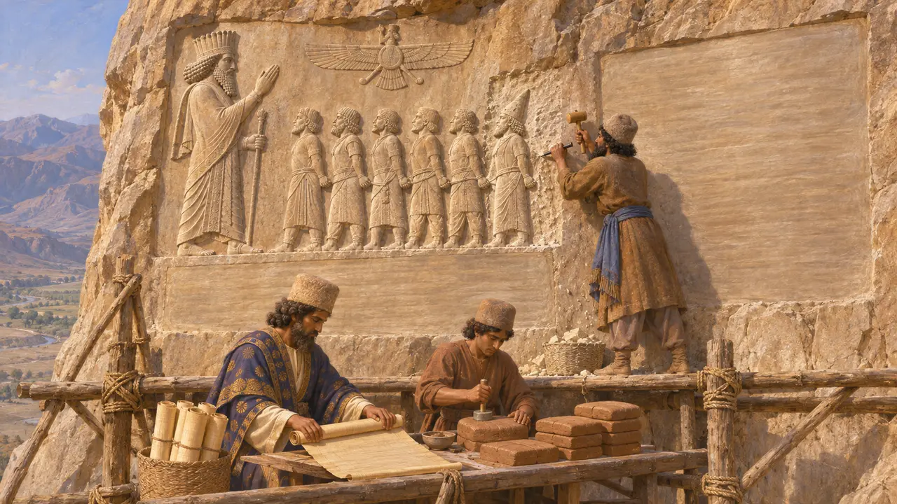
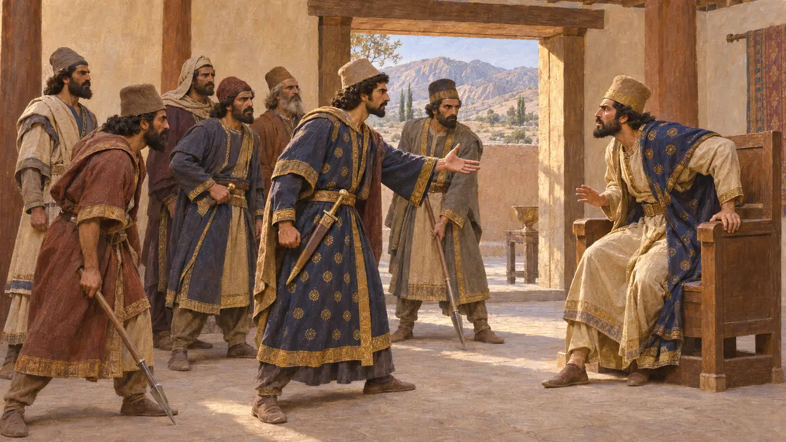
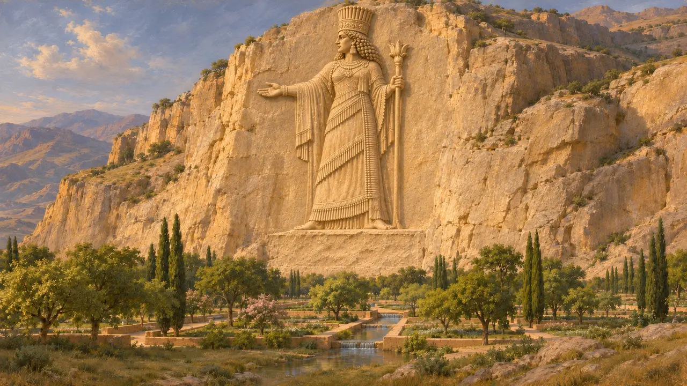

نقش الملك
نقش داريوس الأول البارز ونقشه الكتابي بثلاث لغات، باغاستانا، نحو 520 ق.م
في اللعبة: المستوى 3: الكذب
نقش الملك هو الأثر الذي أمر داريوس الأول بنحته على جرف باغاستانا، بيستون الحالية في غرب إيران، فوق الطريق الممتد من بابل إلى إكباتانا. وتُظهر لوحة منحوتة الملكَ واقفًا فوق المتمردين الذين هزمهم في عامَي 522-521 ق.م، وبجانبها يمتد سرده بالفارسية القديمة والعيلامية والبابلية. وهو أطول نقش ملكي في الإمبراطورية، وروايةُ داريوس نفسه لكيفية ظفره بالعرش.
في اللعبة: في مرحلة باغاستانا يُرفع النقش البارز جزءًا جزءًا على الصخرة المطلّة على الطريق، بحجر جيري لكل جزء وخشب للسقالات عند كل جزء ثالث. وتؤرّخه اللعبة بسنة 521 ق.م؛ والأرجح أن النحت بدأ نحو 520 ق.م ثم وُسِّع لاحقًا.

اللوح المنحوت
في السجلاتيقع النقش على ارتفاع نحو 60 مترًا في الجرف، ويظهر فيه داريوس أكبر حجمًا من سائر الشخوص، واضعًا قدمه على المجوسي الصريع غوماتا. وهو يرفع يده نحو شخص مجنّح داخل قرص، بينما يقف خلفه تابعان يحملان القوس والرمح. وأمامه ينتظر ثمانية ملوك متمردين، أيديهم مقيّدة وأعناقهم مربوطة بحبل واحد. أما الشخص التاسع، سكونخا الساكي بقلنسوته المدبّبة، فقد حُشر في آخر الصف بعد حملة لاحقة.
Behistun relief; R. Schmitt, The Bisitun Inscriptions of Darius the Great, 1991

ما يقوله نص الملك
في السجلاتيقول داريوس إن قمبيز قتل أخاه برديا سرًّا، وإن المجوسي غوماتا ادّعى سنة 522 ق.م أنه برديا واستولى على المُلك. فقتله داريوس وستة من أعوانه في ميديا (DB §§10-13، §68). ثم اندلعت الثورات في عيلام وبابل وميديا وفارس ومرغيانا وغيرها، ويزعم داريوس أنه خاض تسع عشرة معركة وأسر تسعة ملوك في سنة واحدة (DB §52). ويروي عمود خامس أُضيف لاحقًا حملاتٍ على عيلام والساكا.
DB §§10-13, §52, §68

ثلاث لغات ونسخ كثيرة
في السجلاتيُرجَّح أن النص نُقش أولًا بالعيلامية، ثم بالبابلية، وأُضيفت الفارسية القديمة أخيرًا؛ وحين أُدرج سكونخا، أُزيل جزء من النص العيلامي الأول وصُنعت نسخة عيلامية ثانية. وفي DB §70 يقول داريوس إنه صنع النقش بطريقة جديدة، بالآرية، وأرسله إلى كل البلاد، وهو ما يفهمه كثير من الباحثين على أنه ابتكار الخط الفارسي القديم. وقد بقيت نسخة بابلية في شذرات من بابل، ونسخة آرامية على بردية من إلفنتين.
DB §70; J. C. Greenfield and B. Porten, The Bisitun Inscription of Darius the Great: Aramaic Version, 1982

محتال أم أمير حقيقي
متنازع عليهيروي هيرودوت قصة مشابهة، فيسمي الملك الزائف سمرديس ويعدّد سبعة متآمرين، وإن كان أحد الأسماء عنده، أسباثينيس، يختلف عن أردومانيش الذي ذكره داريوس. وقد ترجع الروايتان كلتاهما إلى تقليد البلاط نفسه، فلا شيء مستقل يؤكد قصة المنتحل. ويرى بعض المؤرخين أن داريوس قتل برديا الحقيقي واختلق قصة المجوسي ليسوّغ استيلاءه على العرش، بينما يقبل آخرون رواية الملك. وتبقى المسألة مفتوحة.
Herodotus 3.61-88; P. Briant, From Cyrus to Alexander, 2002

نُصب ملكة في الأساطير اليونانية
أسطورة لاحقةنسب بعض الكتّاب اليونانيين النقش إلى غير داريوس. فقد قال كتيسياس، كما نقل عنه ديودوروس، إن الملكة الآشورية سميراميس أنشأت حديقة في باغيستانون وأمرت بنحت صورتها على الجرف مع نقش بحروف سريانية. وهذه القصة من الحكايات التي رُويت عن سميراميس، ولا صلة لها بالأثر الحقيقي الذي يذكر اسم داريوس في كل موضع.
Diodorus 2.13
المصادر
- Behistun inscription, DB (Old Persian, Elamite and Babylonian versions)
- R. Schmitt, The Bisitun Inscriptions of Darius the Great: Old Persian Text, 1991
- A. Kuhrt, The Persian Empire: A Corpus of Sources from the Achaemenid Period, 2007
- Herodotus 3.61-88
- P. Briant, From Cyrus to Alexander, 2002
- Diodorus 2.13